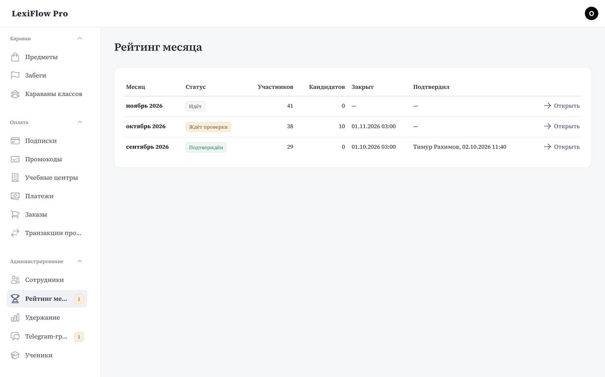
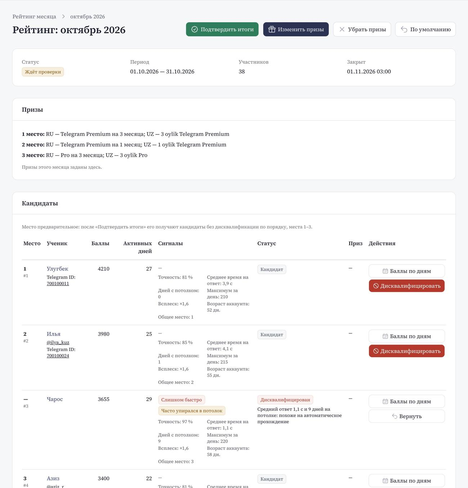
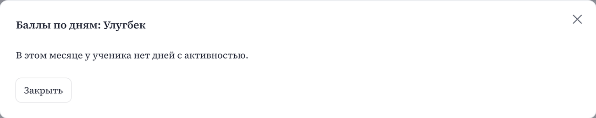
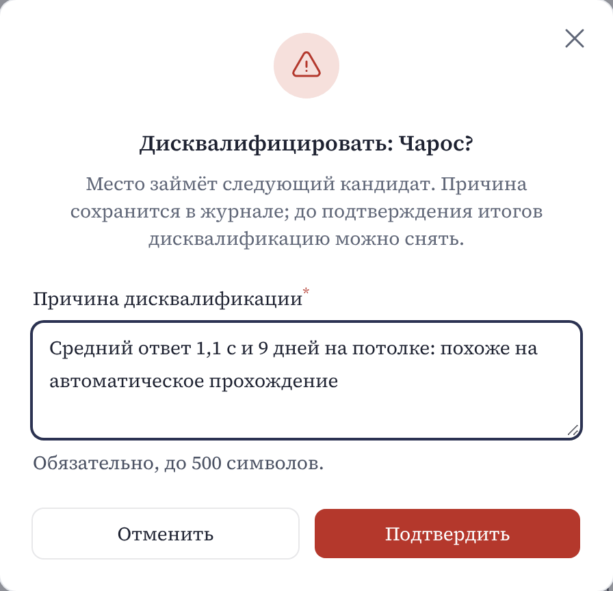
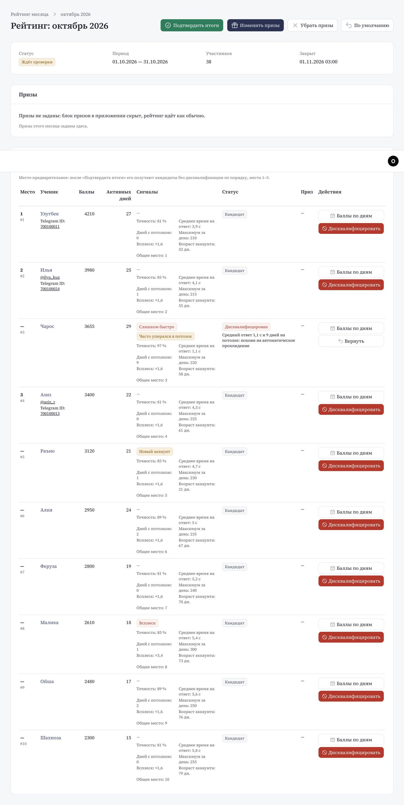
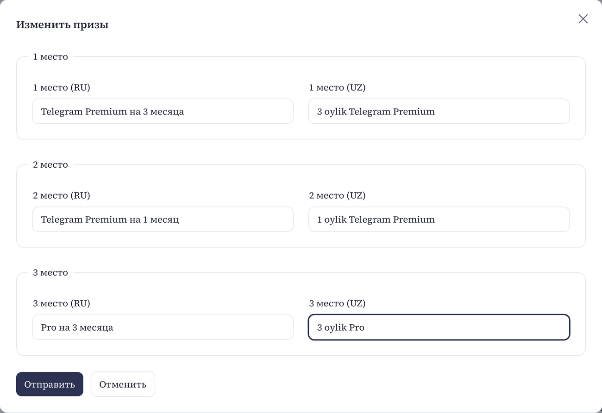
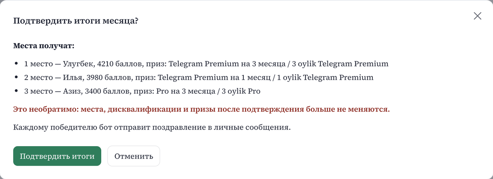
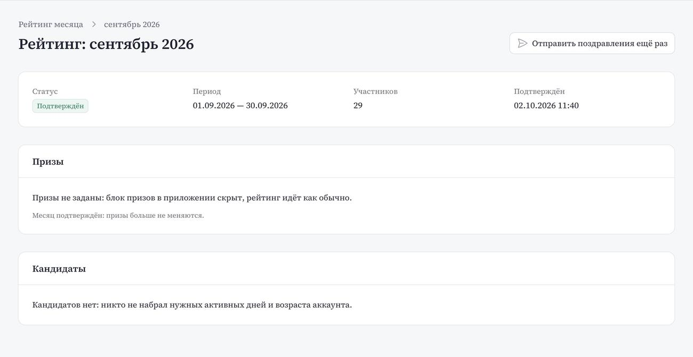

За каждое занятие ученик получает очки лиги. Кроме недельных лиг, есть рейтинг месяца с призами за 1–3 места. Призы ничего не выдают сами: итоги месяца проверяет и подтверждает администратор. Раздел Администрирование → Рейтинг месяца — только для администратора.
| Статус | Что происходит |
|---|---|
| Идёт | ученики набирают очки. В зачёт идёт не больше дневного потолка очков за день (по умолчанию 300) |
| Закрывается | месяц кончился 1-го числа в 00:00; через несколько часов он закрывается автоматически |
| Ждёт проверки | очки окончательные, отобраны 10 лучших кандидатов с сигналами «подозрительности». Пункт меню показывает жёлтое число — сколько месяцев ждут проверки |
| Подтверждён | места и призы окончательные, победители получили поздравления |
Кандидатом становится ученик, у которого не меньше 10 дней с очками и аккаунт не моложе 14 дней на конец месяца (пороги по умолчанию).

Кнопка Открыть у месяца. Вверху — статус, период, число участников, когда закрыт; блок Призы; ниже — Кандидаты по местам.

| Колонка | Что значит |
|---|---|
| Место | предварительное: места 1–3 получают лучшие кандидаты без дисквалификации; ниже — номер в общем порядке |
| Ученик | ссылка на карточку ученика. У претендентов на место — @username и Telegram ID: так вы свяжетесь с победителем, чтобы вручить приз |
| Баллы, Активных дней | очки за месяц с учётом дневного потолка и число дней с очками |
| Сигналы | факты (точность, среднее время на ответ, дней с потолком, максимум за день, всплеск, возраст аккаунта, общее место) и цветные флаги |
| Статус, Приз, Действия | «Кандидат», «Победитель» или «Дисквалифицирован» с причиной; вручён ли приз; кнопки |
Флаг — повод присмотреться, а не приговор. Наведите курсор на флаг — появится пояснение.
| Флаг | Что значит | Куда смотреть |
|---|---|---|
| Низкая точность | меньше 55 % верных ответов (при 50+ оценках): карточки могли отмечаться наугад ради баллов | «Баллы по дням», карточка ученика |
| Слишком высокая точность | больше 98 % верных: скрипт или привычка всегда жать «легко» | то же |
| Слишком быстро | в среднем меньше 1,5 с на карточку: так быстро слова не прочитать | среднее время на ответ |
| Новый аккаунт | аккаунту меньше 30 дней к концу месяца | возраст аккаунта, приглашения ученика |
| Всплеск | лучший день в 3 раза и более выше среднего активного дня | «Баллы по дням» |
| Часто упирался в потолок | 5 и более дней на дневном потолке очков | «Баллы по дням», колонка «Засчитано» |
Баллы по дням открывает окно со всеми днями месяца: повторения, верные, новые слова, цель дня, баллы и «Засчитано» (с учётом потолка).




Ученики видят призы на экране рейтинга, поэтому задавайте их до начала месяца или хотя бы до подтверждения. После подтверждения призы не меняются.

Подтверждение необратимо: места, дисквалификации и призы больше не меняются. Бот сразу отправит каждому победителю поздравление на его языке («Вы заняли N-е место… Ваш приз: …; мы свяжемся с вами в Telegram»), а мини-приложение покажет победителей прошлого месяца. Если среди победителей есть недоступный ученик (удалён или заблокирован), окно предупредит об этом — дисквалифицируйте его, если приз вручать не нужно.
Если другой администратор подтвердил итоги раньше вас, ваше нажатие закончится сообщением «Месяц не ждёт проверки…», страница обновится, и ничего не произойдёт дважды. Отметку Приз вручён ставят один раз, снять её нельзя. Если поздравления дошли не всем, у подтверждённого месяца есть кнопка Отправить поздравления ещё раз: получившие второго сообщения не получат.
